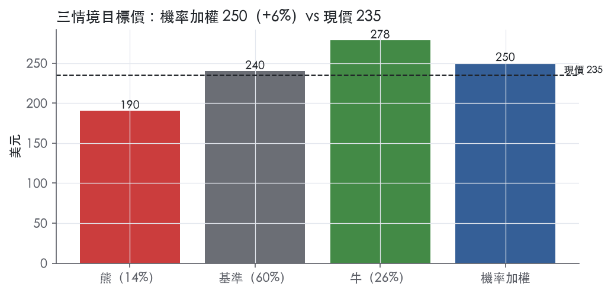
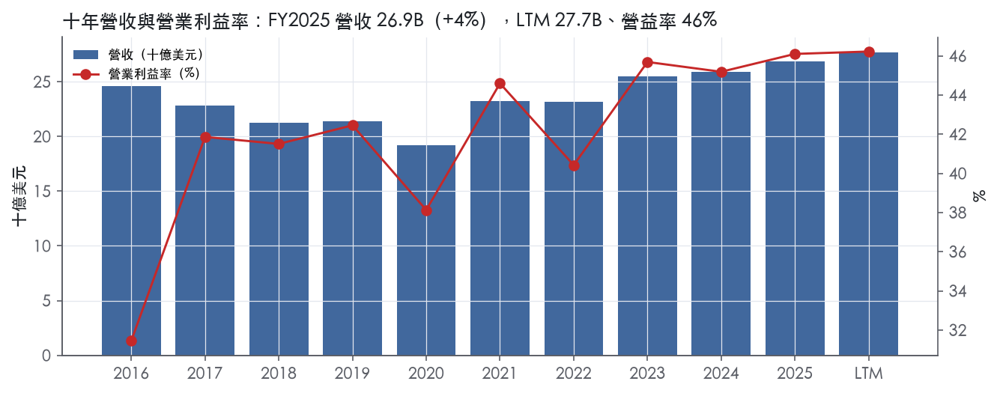
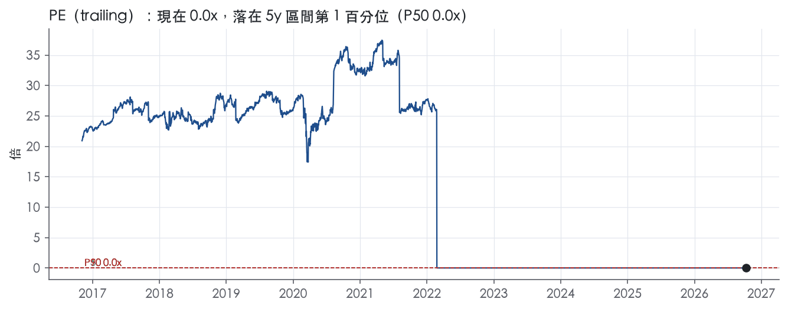
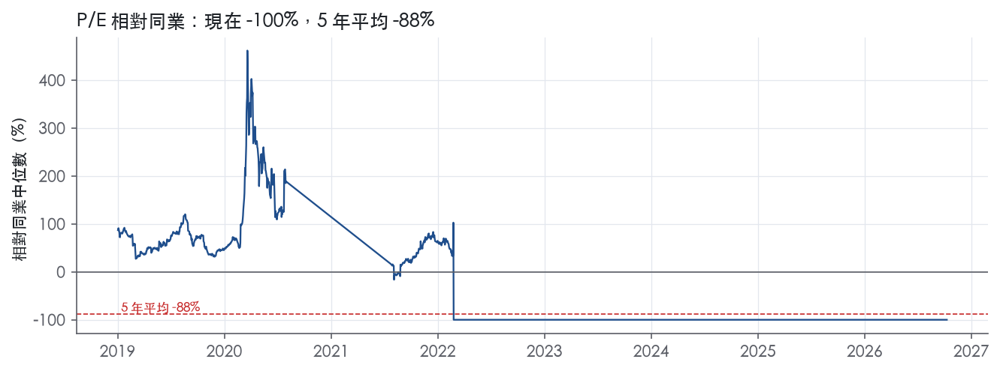
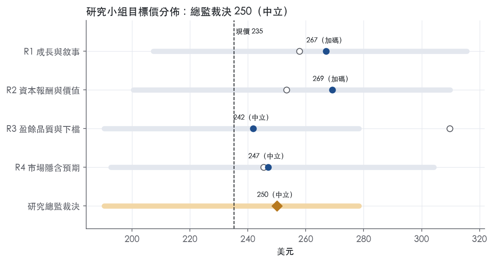
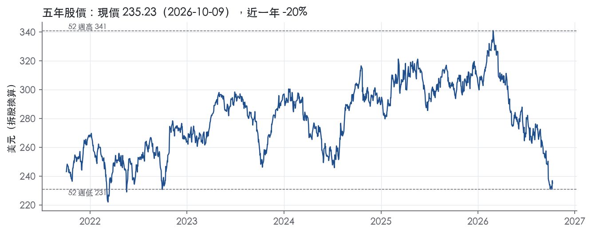

評等總表 › 非必需消費 › MCD
盈餘修正後現價合理，中性｜評等 中立｜目標價 250
| 報告日 | 評等 | 目標價 | 當時股價 | 超額報酬 |
|---|---|---|---|---|
| 2026-10-09 | 中立 | 250 | 235 | -0.8% |
| 評等 | 中立 |
| 12 個月目標價 | 250 美元 |
| 現價 | 235.23 美元（2026-10-09） |
| 預期報酬 | 股價 +6.3%＋股息 3.2%＝總報酬 +9.4%；同業籃門檻 10.2%，超額 -0.8% |
| 估值方法 | P/E 18.5x，套在未來四季的EPS |
| 三情境 | 熊 190／基準 240／牛 278 |
| 研究流程 | 四位研究員兩輪辯論＋研究總監裁決 |
| 資料來源 | SEC EDGAR XBRL、Tiingo、FRED（全免費） |
盈餘修正後現價合理，中性（研究總監裁決，四位研究員兩輪辯論後）
評等 中立｜12 個月目標價 250 美元（總監三情境機率加權 243 與研究員中位數 257 各半）｜現價 235.23（2026-10-09）
預期報酬：股價 +6.3%＋股息 3.2%＝總報酬 +9.4%。同業籃門檻 10.2%，超額 -0.8%。
估值方法：P/E 18.5x，套在未來四季的EPS。三情境：熊 190（14%）／基準 240（60%）／牛 278（26%）。
什麼會讓研究總監改變看法：FY2026Q3 美國可比 ≥3% 且來客轉正，基準倍數上移至 20x、轉多；新聞稿出現加盟商讓利或補助、或 FY2026 營益率跌破 45%，轉空並提高熊機率。
| 過去四季（實際，FY2026Q2） | 未來四季 | 第 5–8 季 | 第 9–12 季 | |
|---|---|---|---|---|
| 營收（B） | 27.7B | 28.7B | 30.0B | 31.5B |
| 營收成長 | 6.3% | 3.5% | 4.5% | 5.0% |
| 營業利益率 | 46.2% | 45.8% | 46.0% | 46.2% |
| EPS（美元） | 3020668.13 | 12.96 | 13.82 | 14.81 |
| EPS 成長 | 8.2% | -100.0% | 6.6% | 7.2% |
| 每股股息（美元） | 7.35 | 7.35 | 7.35 | 7.35 |
| P/E（現價） | 0.0x | 18.1x | 17.0x | 15.9x |
| 股息殖利率（現價） | 3.2% | 3.1% | 3.1% | 3.1% |
過去四季為申報數字；預測為研究總監的假設、程式計算。倍數與殖利率都用現價計算，用來看現價對應各期獲利的高低。
| 情境 | 機率（歷史） | 故事 | 未來四季營收成長 | 第 5–8 季營益率 | 倍數 | 目標價 | 股價漲跌 |
|---|---|---|---|---|---|---|---|
| 熊 | 14%（13%） | 風險表第 1 條惡化傳導至第 4 條：美國來客續負、漲價空間用盡，加盟商現金流轉差迫使總部讓利，固定占用成本去槓桿、回購縮手，倍數向同業中位數方向壓縮 | 0.5% | 44.5% | 16.0x | 190 | -19.1% |
| 基準 | 60%（59%） | 美國可比低檔但不惡化、Q4 高基期與匯率順風消退使報表成長降速、稅率 21%、重整費常態化、EV/EBITA 倍數持平 | 3.5% | 46.0% | 18.5x | 240 | 2.0% |
| 牛 | 26%（27%） | 新任美國總裁兩季內把來客數拉正，可比銷售回到 3% 以上，營益率回 47%，倍數部分回補但遠低於 52 週高點時的估值 | 5.5% | 47.2% | 20.5x | 278 | 18.3% |
目標價由程式依研究總監的驅動與倍數計算；機率由研究總監給定。括號內是歷史頻率：把這檔股票過去十年 12 個月報酬的波動形狀，置中在基準情境，結果落在各情境附近的比例。

四位研究員用不同方法各自估值，回應研究總監的質疑後交出第二輪，最後由總監逐點裁決。各研究員的主張見第七章，裁決理由見第八章，完整論證見《研究底稿》。
| 立場（一輪→二輪） | 加權目標價（一輪→二輪） | 評等（一輪→二輪） | 第二輪倍數 | 熊～牛目標價 | |
|---|---|---|---|---|---|
| R1 成長與敘事 | 中性→看多 | 258→267 | 中立→加碼 | 20.0x | 207～316 |
| R2 資本報酬與價值 | 中性→中性 | 253→269 | 中立→加碼 | 20.0x | 200～310 |
| R3 盈餘品質與下檔 | 中性→中性 | 310→242 | 買進→中立 | 18.5x | 190～278 |
| R4 市場隱含預期 | 中性→中性 | 245→247 | 中立→中立 | 17.0x | 193～304 |
| 研究總監裁決 | 中性 | 250 | 中立 | 18.5x | 190～278 |
目標價由程式依各自的驅動與倍數計算；評等＝機率加權總報酬 − 同業籃門檻。
McDonald's 是以特許經營模式驅動的全球最大連鎖速食集團，營收主要來自向加盟主收取的權利金與房租，而非自己開店賺餐飲毛利。「McDonald's is the world's leading global foodservice retailer with over 45,000 locations in over 100 countries. Approximately 95% of McDonald's restaurants worldwide are owned and operated by independent local business owners.」¹這句話同樣出現在第一季新聞稿中²，代表公司持續用同一套敘事定義自己：一個靠當地獨立業主經營、總部收權利金與房租的輕資產平台。客戶端是全球大眾市場消費者，橫跨美國本土與一百多個國家的加盟市場，公司近年把會員App與數位訂餐當成第二個客戶接觸點來經營，而不只是賣漢堡的櫃檯生意。
本次取得的 10-K（申報日 2026-02-24）Item 1 原文僅含目錄與簽署頁，沒有分部敘述的實質內容可抄，Business 章節本身在原始文件中頁數很短，細節被歸在 Item 2 Properties，但該章同樣未在本次提供內容中出現，因此分部的文字說明「10-K 未揭露」。公司實際上依地理與經營模式分成三個可比較銷售（comparable sales）報告口徑：美國、國際經營市場（International Operated Markets）與國際發展授權市場（International Developmental Licensed Markets）¹。從收入結構看，FY2026Q2 總營收 7,099M 美元中，特許加盟餐廳收入 4,393M 美元、自營餐廳銷售 2,525M 美元、其他收入 182M 美元¹；FY2026Q1 總營收 6,517M 美元中，特許加盟收入 4,007M 美元、自營餐廳銷售 2,317M 美元、其他收入 193M 美元²。特許加盟收入穩定佔總營收六成以上，是公司營業利益率能維持在 45–47% 區間的主要原因。拉長看年度，FY2025 營收 26.89B 美元、營益率 46.1%、EBITDA 12.85B 美元，相較 FY2016 營收 24.62B 美元、營益率 31.5%，十年間營收只成長約一成，但營益率大幅墊高，說明公司這十年的策略是把直營店轉為加盟、把自己變成一個收租與收權利金的輕資產平台，而不是靠開更多店衝營收。公司沒有在本次取得的文字中揭露三個分部各自佔總營收或營業利益的具體百分比，這部分「10-K 未揭露」。
公司客戶遍布一百多個國家，但九成五的門店實際由當地獨立加盟主經營，McDonald's 本身更像特許權與品牌管理公司而非餐飲連鎖直營商¹。地區上，美國仍是最大單一市場，公司在 2026 年第二季新聞稿中特別宣布「Skye Anderson, proven McDonald's executive, appointed as President of McDonald's USA to lead the Company's largest market」¹，直接點名美國是最大市場但執行力需要加強。通路方面，公司近年把會員忠誠計畫當成核心通路指標：「Across 70 loyalty markets, Systemwide sales to loyalty members for the trailing twelve months increased over 20% to $40 billion, with 90-day active loyalty users up 13% to nearly 220 million as of quarter-end」¹；第一季新聞稿則揭露「Across 70 loyalty markets, Systemwide sales to loyalty members were over $38 billion for the trailing twelve-month period and over $9 billion for the quarter」²。兩季對比顯示會員體系的系統銷售規模在半年內從 38B 美元滾動成長到 40B 美元，活躍會員數同步擴大，忠誠計畫已經是比單店坪效更重要的成長變數。傳統通路仍是實體門店加得來速，但數位點餐、外送與App會員已經是公司對外溝通業績時優先引用的指標，顯示公司自己也認為這是估值敘事的一部分。
FY2025Q3（截至 2025-09-30）營收 7.08B 美元，年增 3.0%，營益率 47.4%，EBITDA 3.48B 美元，是過去八季中營益率最高的一季。FY2025Q4（截至 2025-12-31，為年度倒推推導值）營收 7.01B 美元，年增轉強至 9.7%，但營益率回落到 45.0%，顯示第四季營收加速的同時成本壓力也上來。進入 2026 年，第一季營收 6,517M 美元，年增 9%（四季度制營收 9%，不含匯率影響為 4%）²，可比銷售總公司增長 3.8%，美國增長 3.9%、國際經營市場增長 3.9%、國際發展授權市場增長 3.4%²，CEO Chris Kempczinski 稱「McDonald's delivered this quarter. Our 6% global Systemwide sales growth shows how we executed with discipline, proving that we can drive results even in a challenging environment」²。第二季營收 7,099M 美元，年增 4%（不含匯率 2%），總公司可比銷售僅增 1.3%，其中美國僅增 0.8%、國際經營市場增 1.5%、國際發展授權市場增 1.9%，且美國結果「were driven by positive check growth, including favorable product mix, partly offset by negative comparable guest counts」¹，代表美國是靠漲價與產品組合撐住業績，來客數實際是負的。兩份新聞稿都揭露了同一項持續性費用：與「Accelerating the Organization」組織重整相關的稅前費用，第一季 47M 美元、第二季 52M 美元²¹，這筆費用已經連續多季出現，不是一次性項目。兩份新聞稿均未提供下一季或全年財務指引數字。
公司第一季把成長引擎定義為「value leadership, breakthrough marketing, and menu innovation continue to serve up what customers want」，並強調「going three-for-three」的執行紀律²。第二季管理層的敘事轉向修正美國執行力：「While our playbook is working around the world, we see an opportunity to raise the bar in the U.S. and accelerate performance in our largest market」，並以任命 Skye Anderson 擔任 McDonald's USA 總裁作為具體行動¹。公司也持續把會員忠誠計畫的系統銷售與活躍用戶數字放在新聞稿最前面當作headline指標¹。整體看，公司自己講的成長故事已經從「全球打法一致奏效」逐漸收斂成「美國需要單獨修正」，這是一個訊號轉弱、管理層承認最大市場執行有缺口的措辭變化。從財務結構看，特許加盟收入占比高、營益率長期墊高到45%以上，代表公司真正的成長引擎已經不是展店本身，而是會員黏著度與單店客單價。美國可比銷售來客數連續為負但靠漲價撐住業績，是這套引擎目前最大的隱憂，值得在後續單季數據中持續追蹤。

McDonald's 的護城河評為寬，依據是兩點：全球品牌，加上 45,000 家以上門店的系統規模所形成的成本優勢。這兩項優勢支撐營業利益率十年間沒有跌破 31.5%，且近三年站穩 45% 以上。趨勢判為穩定而非變寬，原因是美國來客數轉負，價格力正在被消耗。
這個評級有一個缺口：量化底稿沒有任何一年的 ROIC 資料，「ROIC 高於資本成本」這項核心測試本次無法直接完成，評級是用利潤率與現金流推論出來的。
無形資產（品牌）： 這是最主要的優勢來源。「Approximately 95% of McDonald's restaurants worldwide are owned and operated by independent local business owners.」¹獨立業主願意自己出資開店，並持續付權利金與房租給總部，這就是品牌價值能被收費的直接證據。會員體系也印證品牌黏著度：「90-day active loyalty users up 13% to nearly 220 million as of quarter-end」¹。品牌讓公司能用加盟模式把資本負擔轉給業主，自己只收高毛利的權利金，這是利潤率結構性偏高的根源。
成本優勢（規模）： 「McDonald's is the world's leading global foodservice retailer with over 45,000 locations in over 100 countries.」¹這個系統規模讓採購、行銷與數位平台的固定成本可以攤在全球門店上，小型連鎖無法複製。數位會員平台的規模同樣如此：「Systemwide sales to loyalty members for the trailing twelve months increased over 20% to $40 billion」¹，這種體量的數據與行銷投入在同業中很難追上。
轉換成本、網路效應與效率規模本次沒有原文證據，因此不列入。本次取得的 10-K Item 1 只有目錄與簽署頁，沒有競爭段落可以引用，品牌與規模的證據全部來自新聞稿。
利潤率的數據支持寬護城河，ROIC 的數據則無法驗證。營業利益率十年平均 41.7%、標準差 4.2%，最低 31.5%、最高 46.1%，以餐飲業來說是極高且極穩定的水準。FY2020 疫情年營收年減 10.1%，營益率仍有 38.1%，代表需求衝擊下定價與加盟收費結構沒有崩壞。FCF 利潤率十年平均 23.9%、標準差 4.5%、最低 16.2%，現金轉換同樣穩定。
衝突與缺口有三項，需要照實寫出：
儘管有這些缺口，評級仍維持寬，理由是：加盟收費模式的資本需求低，加上營益率十年未低於 31.5%，在這種組合下，ROIC 長期低於 10.2% 的情境很難成立。若後續補上的 ROIC 序列顯示有年份低於資本成本，應下修為窄。
最直接的侵蝕來源是美國的價格力正在被消耗。美國第二季的結果「were driven by positive check growth, including favorable product mix, partly offset by negative comparable guest counts」¹，代表業績靠漲價撐住，來客數其實在流失。品牌溢價如果持續轉化成客流損失，最大市場的權利金基礎就會被侵蝕。
第二個風險是組織重整費用已連續出現：「Accelerating the Organization」相關費用第一季為 47M 美元²、第二季為 52M 美元¹。這顯示維持競爭力的成本在上升。
第三個風險是加盟主的經濟效益：漲價與來客下滑如果壓縮加盟主的利潤，展店意願與系統擴張速度會放慢，而這是護城河延續的基礎。目前沒有證據顯示上述風險已經傷到利潤率，FY2026Q2 營益率為 47.0%，所以趨勢判為穩定，不判為變窄。
目標倍數相對餐飲同業應給溢價，理由是品牌加上加盟收費模式，讓營益率長期維持在 40% 以上的高檔，且波動小。溢價幅度不宜超過歷史中位數：美國來客數轉負，代表定價力已接近上限，而且 ROIC 無法驗證，能撐住溢價的量化證據不完整。
估值研究員需特別留意資料包的異常：P/E 0.0x、多筆 EPS 數值異常、稀釋股數為 0.00B，倍數帶的 EV/EBITDA「現在」2.9x 也與快照的 15.5x 互相矛盾，倍數帶與 P/E 在修正前不可直接使用。
| 指標 | 最新 | 十年平均 | 標準差 | 最低 | 最高 |
|---|---|---|---|---|---|
| 營業利益率 | 46.1% | 41.7% | 4.2% | 31.5% | 46.1% |
| FCF 利潤率 | 26.7% | 23.9% | 4.5% | 16.2% | 30.6% |
| ROE | -306.5% | -150.3% | 69.4% | -306.5% | -59.0% |
程式計算。資本成本代理值（10 年債＋5%）：10.2%；ROIC 平均減資本成本：—；ROIC 有資料的 0 年中，高於資本成本 0 年。
營業現金流／淨利 LTM 為 1.29x、近三年平均 1.17x、十年平均 1.21x，三個窗口都是綠燈，代表帳上淨利長期有現金流入支撐。應計比率 LTM 為 -4.3%、近三年 -2.6%、十年 -2.9%，全部是負值且落在綠燈區，顯示盈餘不是靠應計項目堆出來的，現金收現甚至快於損益認列。但自由現金流／淨利只有 LTM 0.88x、近三年 0.84x、十年 0.86x，三個數字都卡在黃燈（<0.90x）。缺口來自資本支出持續墊高：FY2025 資本支出／營收達 12.5%，較 FY2024 的 10.7% 再上一個台階，是近十年僅次於 FY2018 的高點（資料包年度表）。這代表公司把現金從「可自由支配」的口袋，轉去投資重開店、改裝與數位設備，淨利本身可信，但股東能實際拿到手的現金比淨利少了一截。
2026 年第二季新聞稿揭露的非 GAAP 調整，稅後淨額 40M 美元，相當於每股 0.06 美元，主要與「Accelerating the Organization」組織現代化相關的重組費用有關¹。GAAP 淨利 2,362M 美元、每股 3.32 美元，調整後非 GAAP 淨利 2,402M 美元、每股 3.38 美元¹。上一年同季的可比調整項是稅前 43M 美元、稅後每股 0.05 美元，性質相同¹。六個月累計的調整項稅後每股為 0.11 美元（2026）對 0.12 美元（2025），兩年連續出現、金額規模相近，顯示這不是一次性孤立事件，而是公司持續在做的組織重整支出。我認為這類重組費用雖然公司定義為非經常性，但因為連續兩年出現、且與長期組織調整綁在一起，估值時不應該全額加回，應視為部分真實的經營成本。新聞稿並未揭露與 SBC、攤銷相關的額外非 GAAP 調整項目，調整範圍相對單純，透明度尚可。
淨負債／EBITDA 的 LTM 值為 2.94x、近三年平均 3.10x、十年平均 3.21x，三個窗口都貼著 3.00x 紅燈線，屬於結構性高槓桿而非單一年度異常。利息保障倍數（營業利益／利息）LTM 7.88x、近三年 8.06x、十年 8.29x，剛好跌破 8.00x 綠燈門檻；對照損益表，第二季利息費用 409M 美元較去年同期 390M 美元成長 5%，增速快於營業利益 3% 的成長，是保障倍數轉弱的直接原因¹。股東回饋方面，稀釋股數年變動 LTM -0.3%、近三年 -1.1%、十年 -13.1%，全部是負值，代表公司長期靠回購淨減少股數，對 EPS 是加分。（股利＋回購）／淨利 LTM 85.9%、近三年 89.0%，但十年平均高達 129.7%，超過 100% 代表過去十年有些年度股東回饋金額超過當年淨利，是用資產負債表（舉債）在補貼回購與股利。這與淨負債十年來從 24.73B 一路墊高到 40.72B（FY2016 到 FY2025）的軌跡吻合，顯示槓桿上升與股東回饋政策是同一件事的兩面。
自由現金流／淨利黃燈（0.88x/0.84x/0.86x）：真問題但可解釋，根因是資本支出／營收從 FY2024 的 10.7% 拉升到 FY2025 的 12.5%（資料包年度表），屬於主動加碼展店與改裝的資本週期，不是獲利品質惡化。
淨負債／EBITDA 黃燈（2.94x/3.10x/3.21x）：結構性真問題，十年來槓桿持續墊高且從未回到 1.50x 綠燈區，反映的是公司刻意維持的資本結構選擇，而非單一事件造成的暫時性跳升。
利息保障倍數黃燈（7.88x/8.06x/8.29x）：真問題但幅度輕微，單季利息費用增速（5%）高於營業利益增速（3%），是升息環境與債務展延成本上升的自然結果，而非營運惡化¹。
（股利＋回購）／淨利十年均值 129.7%：會計口徑造成的長期現象而非近期紅旗，近三年已降到 89.0%、LTM 85.9%，均在綠燈區，代表公司近年股東回饋步調已比十年平均更克制。
存貨成長 − 營收成長 FY2025 +5.2pp 黃燈：證據不足以判斷是真實營運資金吃緊還是展店備貨所致，原文節錄未提供存貨明細，暫列為待觀察項，不構成立即的盈餘品質疑慮。
估值應以 GAAP 淨利為主、非 GAAP 數字僅作參考，因為重組費用連續兩年出現、具備持續性，全額加回會高估真實盈餘能力。考量自由現金流轉換率長期卡在 0.9x 以下、淨負債／EBITDA 貼近 3x 紅線，建議對 LTM 盈餘打一個溫和折扣（約一成），反映資本支出週期與利息成本上升對自由現金流的侵蝕。槓桿雖未觸及紅燈，但已逼近上限，不支持給予 EV/EBITA 估值倍數高於歷史十年中位數 17.2x，倍數帶現價分位僅 10.3% 的低位反映的是盈餘能見度疑慮，而非單純的錯殺機會。
| 項目 | LTM | 近三年 | 十年 | 燈號 | 規則 |
|---|---|---|---|---|---|
| 營業現金流／淨利 | 1.29x | 1.17x | 1.21x | 綠 | ≥1.00x 綠、<0.80x 紅 |
| 自由現金流／淨利 | 0.88x | 0.84x | 0.86x | 黃 | ≥0.90x 綠、<0.60x 紅 |
| 應計比率（(淨利−CFO)／平均總資產） | -4.3% | -2.6% | -2.9% | 綠 | ≤0.0% 綠、>5.0% 紅 |
| SBC／營收 | 0.6% | 0.7% | 0.6% | 綠 | ≤3.0% 綠、>8.0% 紅 |
| 淨負債／EBITDA | 2.94x | 3.10x | 3.21x | 黃 | ≤1.50x 綠、>3.00x 紅 |
| 利息保障倍數（營業利益／利息） | 7.88x | 8.06x | 8.29x | 黃 | ≥8.00x 綠、<3.00x 紅 |
| 稀釋股數年變動 | -0.3% | -1.1% | -13.1% | 綠 | ≤0.0% 綠、>3.0% 紅 |
| （股利＋回購）／淨利 | 85.9% | 89.0% | 129.7% | 綠 | ≥50.0% 綠、<0.0% 紅 |
| 存貨成長 − 營收成長（FY2025） | +5.2pp | — | — | 黃 | ≤5pp 綠、>15pp 紅 |
程式計算；燈號以 LTM（無則近三年平均）判定。
本次 10-K Item 1A 原文僅取得目錄與簽署頁，沒有風險因子的實質內容可抄；以下五條風險依業務概況章與最新兩季財報新聞稿的具體揭露，加上我們自己的判斷整理而成，所有數字均標明出處。最大的風險是美國本土——公司最大、最賺錢的市場——來客數連續轉負、業績完全靠漲價與產品組合撐住，而管理層自己已經公開承認這個問題並臨時換將。
| 風險 | 觸發指標（看什麼數字、在哪裡看） | 對 EPS 的影響方向與粗略幅度 | 未來 12 個月發生機率 | 出處 |
|---|---|---|---|---|
| 美國本土來客數持續負成長，靠漲價撐業績 | 每季 8-K 揭露的 U.S. comparable sales 與 comparable guest counts 分項 | 負向，中～大（美國是最大市場，若漲價空間用盡來客數又未回正，營收與營益率同步受壓） | 高 | 8-K 財報新聞稿（2026-08-04） |
| 「Accelerating the Organization」重整費用連續多季出現，非一次性 | 每季新聞稿 Reconciliation 表中的 pre-tax charges 金額與每股影響 | 負向，小～中（已知：2026Q2 52M 美元／每股 0.06 美元；2026H1 99M 美元／每股 0.11 美元）¹ | 高（已持續發生） | 8-K 財報新聞稿（2026-08-04） |
| 中國可比銷售轉負，拖累國際發展授權市場整體表現 | 每季 8-K 的 International Developmental Licensed Markets 分區評論 | 負向，小～中（方向明確，幅度未揭露） | 中 | 8-K 財報新聞稿（2026-08-04） |
| 特許加盟收入占比過高，業績高度依賴加盟商財務健康與展店速度 | 每季 8-K 的 Franchised revenues／Company-operated sales 拆分，以及 Systemwide sales 成長率 | 負向，中（結構性，若加盟商現金流轉差會傳導至權利金與房租收入） | 中 | 8-K 財報新聞稿（2026-08-04） |
| 高利率環境下淨負債規模大，再融資成本上升壓縮估值倍數空間 | 10 年期美債殖利率（ust10y）、公司淨負債、EV/EBITDA 相對歷史分位 | 不影響 EPS 本身，但方向向下壓縮倍數（判斷：中） | 中 | 量化底稿（39.04B；5.22） |
美國本土是最大風險，因為公司自己在財報新聞稿裡已經承認問題並採取人事行動。2026 年第二季美國可比銷售僅增 0.8%，公司明確寫「U.S. comparable sales results were driven by positive check growth, including favorable product mix, partly offset by negative comparable guest counts」¹，代表來客數是負的，業績全靠漲價與產品組合撐住。對比第一季美國可比銷售增 3.9%²，第二季急速放緩到 0.8%，惡化速度很快。CEO Chris Kempczinski 在同一份新聞稿中直接說「we see an opportunity to raise the bar in the U.S. and accelerate performance in our largest market」，並宣布任命新任美國總裁 Skye Anderson¹，這代表管理層自己認定美國執行力不足是當下最急迫的問題。這條風險的觀測指標非常明確：每季新聞稿都會拆出 U.S. comparable sales 與 comparable guest counts，一旦來客數連續兩季以上未見回正、或漲價空間因消費者反彈而縮窄，營收成長與營益率會同步受壓。
重整費用「Accelerating the Organization」已經連續兩季出現，不是一次性項目。第二季稅前費用 52M 美元，相當於每股 0.06 美元；上年同期為 43M 美元、每股 0.05 美元；累計上半年達 99M 美元、每股 0.11 美元¹。這筆費用被公司定義為「與公司內部現代化工作方式的努力相關的重整費用」，但已經跨越至少四個季度持續出現（2025Q1、Q2 均有對應揭露），顯示組織調整尚未結束。觀測方式是每季新聞稿的 Non-GAAP Reconciliation 表格，只要這筆費用持續存在甚至擴大，就代表管理層口中的「一次性」調整實際上是結構性的營運成本。
國際發展授權市場（International Developmental Licensed Markets）整體可比銷售仍正成長 1.9%，但公司明確點名中國是負貢獻來源：「Positive comparable sales were led by Japan...partly offset by negative comparable sales in China」¹。中國是公司在該區域最大的市場之一，若中國消費疲弱持續，會持續拖累這個報告分部的成長率，即便日本等其他市場正成長也難以完全抵銷。同樣地，國際經營市場（International Operated Markets）也被點名法國為負貢獻來源，顯示歐洲部分市場同樣有消費疲弱的訊號。觀測指標是每季 8-K 中對各區域正負貢獻國家的具體點名，這是公司自願揭露、可追蹤的文字訊號。
公司九成五以上門店由加盟主經營，營收結構以特許加盟收入為主：第二季總營收 7,099M 美元中，特許加盟收入 4,393M 美元，占比超過六成¹。這個模式讓公司自己的營益率維持在 45–47% 的高水準，但也代表公司的真實現金流品質高度依賴加盟商體系的健康度與展店速度——Systemwide sales（包含加盟店銷售）才是驅動特許權利金收入的真正引擎¹。若加盟商在高通膨、高人力成本環境下利潤率被壓縮，公司可能被迫在權利金條件或行銷基金分攤上讓步，這是結構性、慢變量但長期存在的風險。
最後一條是估值與利率環境的風險。目前 10 年期美債殖利率為 5.22%（2026-10-08）【判，量化底稿 】，公司淨負債達 39.04B 美元【判，量化底稿】。在高利率環境維持更久的情境下，公司再融資成本會上升，同時全市場對高倍數防禦性消費股的估值容忍度下降，這不會直接衝擊 EPS，但會壓縮公司目前享有的估值溢價空間。
美國總裁臨時換人，短期內可能造成執行斷層。公司在同一份新聞稿中同時承認美國執行力不足、又同步宣布換將，這種「問題曝光＋人事變動」同時發生的組合，歷史上常伴隨至少一到兩季的過渡期績效波動，10-K 風險因子不會寫這種人事層面的執行風險，但投資人應在接下來一到兩季的美國可比銷售與來客數數據中特別留意是否出現進一步惡化。
公司淨負債規模偏高且未在本次取得文件中揭露明確的債務到期結構與平均利率，在目前 10 年期美債殖利率處於 5.22% 高位的環境下，若公司有大額債務在未來 12 個月內到期需要展期，再融資成本上升會直接壓縮淨利，這點不在公司自願揭露的重點之中，但屬於可從資產負債表數字長期追蹤的風險。
現價 235.23 對應 trailing（過去四季）P/E 0.0x、EV/EBITDA 15.5x、EV/EBITA 16.0x、EV/Sales 7.4x、FCF 殖利率 4.7%。主要估值倍數 P/E 現在 0.0x，落在5 年區間第 1 百分位（P10／P50／P90 = 0.0x／0.0x／0.0x）。

把程式的機械基準預測放到現價下，市場付的前瞻倍數是：P/E（未來四季） 16.2x、P/E（第 5–8 季） 15.0x。反推 DCF 顯示市價隱含未來五年營收年成長 10.6%（WACC 9.0%、終值成長 3.0%、FCF 利潤率 28.0%，SBC 不加回）。
| 倍數 | 現在 | 5 年 P10 | 5 年 P50 | 5 年 P90 | 現在分位 | 全期 P50 |
|---|---|---|---|---|---|---|
| P/E | 0.0x | 0.0x | 0.0x | 0.0x | 0.6% | 23.1x |
| EV/EBITDA | 2.9x | 2.9x | 3.1x | 22.3x | 10.3% | 14.4x |
| EV/EBITA | 3.0x | 3.0x | 3.2x | 23.0x | 10.3% | 17.2x |
| EV/EBIT | 3.0x | 3.0x | 3.2x | 23.0x | 10.3% | 17.2x |
| EV/Sales | 1.4x | 1.4x | 1.5x | 9.8x | 15.5% | 6.8x |
| P/S | 0.0x | 0.0x | 0.0x | 8.5x | 0.6% | 5.6x |
| P/FCF | 0.0x | 0.0x | 0.0x | 30.4x | 0.6% | 26.0x |
trailing 倍數（股價 ÷ 過去四季）；分位以每個交易日計算。
同業籃：DRI, CMG, EAT, ARCO, BLMN, CAKE（SIC 5812 同業 22 家中，CY2025 營收最接近的 6 家）。評等門檻 10.2%：同業「倍數不變下持有一年」的隱含報酬中位數（＝ FCF 殖利率 ×(1＋g)＋g，g 為 5 年營收年複合成長並夾在 −2%～8%），每家夾在 0～15%、P/E 低於 5 倍視為資料可疑而排除，中位數再限制在 10 年債到 10 年債＋5% 之間（同業原始中位數 13.0%）；排除：ARCO（隱含報酬算不出來）。
| 代號 | 市值 | 5 年營收 CAGR | 營益率 | ROIC | P/E | 5 年 P/E 中位數 | EV/EBITDA | P/FCF | 隱含報酬 |
|---|---|---|---|---|---|---|---|---|---|
| MCD | 166.5B | 7.0% | 46.2% | — | 0.0x | 0.0x | 15.5x | 21.4x | 11.9% |
| DRI | 22.6B | 12.9% | 11.7% | 50.8% | 19.4x | 20.2x | 11.7x | 21.4x | 13.0% |
| CMG | 40.4B | 14.8% | 14.7% | 73.7% | 29.1x | 5.2x | — | 25.8x | 12.2% |
| EAT | 8.2B | 11.7% | 10.7% | 66.0% | 17.9x | 16.8x | — | 14.7x | 15.4% |
| ARCO | 1.6B | 18.7% | — | 18.0% | — | — | — | — | — |
| BLMN | 0.7B | 4.5% | 1.2% | 2.2% | 27.6x | 18.8x | 6.0x | 4.8x | 26.5% |
| CAKE | 5.4B | 13.6% | 5.3% | 20.5% | 29.4x | 19.7x | 18.2x | 26.2x | 12.1% |
| 同業中位數 | 13.3% | 10.7% | 35.7% | 27.6x | 18.8x | 11.7x | 21.4x | 10.2% |
全部 trailing，程式以各公司 SEC XBRL 與 Tiingo 行情計算；第一列為本檔。
P/E 相對同業中位數：現在 -100.0%，過去 1 年平均 -100.0%、3 年 -100.0%、5 年 -88.1%；EV/EBITDA 相對同業中位數：現在 -74.9%，過去 1 年平均 -72.6%、3 年 -72.8%、5 年 -27.7%。

事後實現前瞻倍數帶（P/E，2018-08-17..2025-08-15）：P10／P50／P90 = 0.0x／0.0x／30.5x。它是每個交易日的股價除以之後四季實際實現的指標；一年後，今天的第 5–8 季正是那時的未來四季，所以這條帶是 12 個月目標價的同口徑倍數。因為用的是事後實際而非當時預期，過去成長超乎預期的公司這條帶會偏低。
程式的機械基準（成長率從過去四季年增率三年收斂到 6%、利潤率持平）用 事後實現前瞻 P/E P50 估值得到 0（-100.0%），市場現行前瞻倍數（現價 ÷ 基準 未來四季指標）一年後持平，套在基準 第 5–8 季指標得到 254。這兩個數字只是參考點，不是本報告的目標價；研究員對這個定價的回應在第七章。
下表是每位研究員第一輪（各自獨立）與第二輪（回應研究總監的質疑後）的結果。目標價全由程式依各自的假設計算。
| 立場（一輪→二輪） | 加權目標價（一輪→二輪） | 評等（一輪→二輪） | 第二輪倍數 | 熊～牛目標價 | |
|---|---|---|---|---|---|
| R1 成長與敘事 | 中性→看多 | 258→267 | 中立→加碼 | 20.0x | 207～316 |
| R2 資本報酬與價值 | 中性→中性 | 253→269 | 中立→加碼 | 20.0x | 200～310 |
| R3 盈餘品質與下檔 | 中性→中性 | 310→242 | 買進→中立 | 18.5x | 190～278 |
| R4 市場隱含預期 | 中性→中性 | 245→247 | 中立→中立 | 17.0x | 193～304 |
| 研究總監裁決 | 中性 | 250 | 中立 | 18.5x | 190～278 |
目標價由程式依各自的驅動與倍數計算；評等＝機率加權總報酬 − 同業籃門檻。
分歧度：第一輪 加權目標價 245～310（區間＝現價的 27%）· 倍數 16.5～19.5x · 立場 中性×4（方向一致）；第二輪 加權目標價 242～269（區間＝現價的 12%）· 倍數 17～20x · 立場 看多×1、中性×3。

| 研究員 | 第二輪主張 | 堅持的理由 |
|---|---|---|
| R1 成長與敘事 | 溫和看多，目標倍數20.0x，從自家P/E十年中位數23.1x折讓。 | 美國來客轉正前，倍數不回到十年中位數23.1x。 |
| R2 資本報酬與價值 | 中性，目標倍數20x，等於現行倍數一年後持平。 | 10年債5.22%，23.1x形成於低利率期，不押倍數回歸。 |
| R3 盈餘品質與下檔 | 中性，目標倍數18.5x，錨定現行EV/EBITA 16.0x持平。 | 重整費連續四季出現，算經常成本，不加回盈餘。 |
| R4 市場隱含預期 | 中性，目標倍數17x，大幅降評已反映在股價。 | 稅率20%不改；16.2x看似便宜，靠的是高估的盈餘。 |
每位研究員的逐條回應與完整論證見《研究底稿》（MCD_研究底稿_2026-10-12.docx）。
| 分歧點 | R1 成長 | R2 價值 | R3 品質 | R4 預期 | 什麼資料會分出勝負 |
|---|---|---|---|---|---|
| 基準倍數與錨 | 20.0x eps@ntm；錨自家 10y P/E P50 23.1x 折讓，自承高於現行 trailing，押新總裁緩修 | 20x eps@ntm；自稱「現行 trailing 持平」，位置用 FY2025 EPS 11.95 判讀 | 18.5x eps@ntm；錨現行 EV/EBITA 16.0x 一年後持平，為唯一未受股數毀損的估值點 | 17x eps@q5_q8；對市場現行前瞻倍數小幅降評 | FY2026Q4／FY2027Q1 美國來客是否轉正；Q4 報表營收在 +9.7% 基期上的降速幅度 |
| NTM 營收成長 | 4.5% | 4.5% | 3.5% | 4.5% | FY2026Q3 固定匯率營收成長；Q4、Q1'27 面對 +9.7%／+9.4% 基期的報表年增 |
| 稅率 | 21% | 19% | 21% | 20% | FY2026 全年有效稅率（2027-02 10-K） |
| 牛熊倍數與機率 | 牛 23x 回 P50／熊 16.5x；23/62/15 | 牛 22x 回一半／熊 16x；24/62/14 | 牛 20.5x 部分回補／熊 16x 以同業中位為地板；23/63/14 | 牛 20x／熊 14.5x（q5_q8）；20/65/15 | 美國來客轉正時點；風險表第 4 條（加盟商讓利）是否出現帶日期證據 |
一、基準倍數：選 R3（18.5x eps@ntm，EV/EBITA 16.0x 持平）。 第一，錨的有效性。自家帶的 P/E 5y P50 是 0.0x、EV/EBITDA 5y P50 是 3.1x，後者幾乎等於財務體質章的淨負債／EBITDA 2.94x——帶把 FY2021 起歸零的稀釋股數當成權益價值為零。R1 說 P/E 10y P50 23.1x 不受汙染，不成立：5 年中位數為零，代表零值樣本多到能把 10 年中位數也往下拉，23.1x 與 17.2x 都是毀損與有效樣本混合的中位數，何況形成於 10 年債遠低於 5.22%的年代。今天唯一乾淨的估值點是市值 166.46B、EV 205.50B對 LTM EBITA 12.80B的 16.0x。第二，R2 的「持平」不是持平。R2 用 FY2025 EPS 11.95判讀現行倍數「略高於 19x」，但那是 2025 年底的 trailing；H1 2026 稀釋 EPS 年增 6%¹，今天的 LTM 分母更大、現行倍數比 R2 讀到的低，加上 19% 稅率撐高 NTM EPS，20x 實際上是一次 R2 沒察覺的重評價。證據是程式結果：R2 立場中性，算出來卻是總報酬 +17.6%、評等加碼；倍數真的持平，報酬應接近 EPS 成長加 3.2% 股息。第三，R1 誠實承認 20x 高於現行 trailing，理由是新總裁下美國緩修——那是牛情境的敘事。人事案 2026-08-04 宣布，來客轉正最早要到 FY2026Q4（2027-02）或 FY2027Q1（2027-05）才看得到，放不進基準。R4 的小幅降評，理由（美國負來客、槓桿、Q4 高基期）與他壓低驅動的理由相同，R4 自己也承認大幅降評已發生（股價 −19.9%、EPS +6%），邊際上是重複扣分。我不拿 5.22% 的利率壓倍數，現價已含它。
二、NTM 營收成長：選 R3（3.5%）。 Q2 合併營收年增 4%、固定匯率 2%；上半年 6%、固定匯率 3%¹；Q1 年增 9%、固定匯率只有 4%²，報表與固定匯率的差距就是匯率順風。NTM 視窗要面對 FY2025Q4 +9.7%、FY2026Q1 +9.4% 的基期。系統銷售固定匯率 +4%¹是內生成長的上限，特許加盟收入對系統銷售的傳導還會再折一層。4.5% 要成立，匯率順風得再延續一年，沒有證據；R1 自己 G3 重做的基準率（FY2019 後只有 FY2023 超過 5%）反而支持較低的數字。y2／y3 的 4.5%／5.0% 以美國在新總裁下止跌為前提。
三、稅率：選 R3（21%）。 基準的 15% 是「近三年中位數」規則的產物，與新聞稿不符：R3 引用 Q1 2026 所得稅 559M 對稅前 2,542M，公司原文寫「higher effective tax rate」²。R2 的 19% 只靠 Q2 單季（營業利益 3,338M 減利息 409M 對淨利 2,362M）推論，而 R2 看不到 Q1 新聞稿；R4 的 20% 接近。這是基準 NTM EPS 14.51 遠高於 FY2025 EPS 11.95 的最大單一原因，也是「16.2x 看起來便宜」的來源。
四、牛熊倍數與機率：牛、熊都選 R3，機率向歷史。 R1 的牛 23x 等於全額回到低利率年代的 10y P50，R2 的 22x 回一半；兩者牛目標比基準高 28–30%，對照這檔股票的置中分布，≥+30% 的頻率只有 3%，那是尾部不是情境。R3 的牛 20.5x 比基準高 16%，貼近置中 P90 的 +18%，敘事（來客兩季內轉正、營益率 47%、倍數部分回補）是 12 個月內能發生的版本。熊情境 R3 對應風險表第 1→4 條並寫出機制（加盟占用成本 676M 屬固定、直營店費用 2,032M 對銷售 2,317M 利潤薄²，營收一降就去槓桿、回購縮手），目標 190.36 真正測試 52 週低點 230.88 以下；R1 的熊 207.33 只在低點下方一成。
漂移處理：無退回。 R3 加權值 −21.9%、靠攏比例 80%，但來源是 Q1 要求的尺度修正——第一輪 EBITA 尺的 309 是程式未扣淨負債 39.04B的產物，R3 已寫出 EV→權益橋，驅動一個都沒動。R1、R2 依我 G1、V3 的意見改錨而往上移、遠離中位數；R4 幾乎未動。要點出的是 R2 立場中性卻評等加碼而未解釋，以及 R1 的轉多完全來自我不採納的「高於現行 trailing」假設，不是新證據。
與機械基準不同的驅動：
目標倍數 18.5x，eps，未來四季。錨是現行 EV/EBITA 16.0x（trailing 口徑）一年後持平，依口徑規則配 未來四季；用 EBITA 而非 EBITDA 做 EV 尺，因 R3 指出 FY2025 CFO 10.55B 對淨利 8.56B顯示資料包 D&A 偏低、EV/EBITDA 15.5x 被高估。相對自家歷史：1／3／5 年帶全為 0.0x，10 年 P50 已失效，不作錨。相對市場持平倍數：程式的 16.2x 是現價除以基準 NTM EPS 14.51，分母含 15% 稅率與 6.2% 成長；換成本裁決的盈餘口徑，市場現在付的前瞻倍數高於 16.2x，18.5x 實質上是持平，不是「市場一年後會付得比現在少」。相對同業：EV/EBITDA 15.5x 對同業中位數 11.7x（僅 DRI、BLMN、CAKE 有值）的溢價是加盟收租結構（營益率 46% 對同業 1–15%）的結果，基準維持此溢價不擴不縮；P/FCF 21.4x 與同業中位數相同。相對大盤：資料包無大盤倍數，無法交代。
| 情境 | 機率 | 來源 | 驅動（相對基準） | 倍數 | 對應 |
|---|---|---|---|---|---|
| 牛 | 26% | R3 | 營收 5.5／6.0／6.0%，營益率 46.8／47.2／47.5% | 20.5x | 新總裁兩季內把美國來客拉正，可比回 3% 以上，會員 TTM 銷售續擴，倍數部分回補 |
| 基準 | 60% | 總監 | 上節 | 18.5x | 美國可比低檔但不惡化、Q4 高基期使報表成長降速、稅率 21%、重整費常態化、倍數持平 |
| 熊 | 14% | R3 | 營收 0.5／2.0／3.5%，營益率 44.0／44.5／45.0%，股數 −0.3% | 16.0x | 風險表第 1 條惡化傳導至第 4 條：來客續負、漲價空間用盡、加盟商現金流轉差迫使總部讓利，固定占用成本去槓桿、回購縮手 |
假設與 R3 第二輪相同，程式算出基準 239.84、牛 278.38、熊 190.36；牛比基準高 16%、熊低 21%，歷史落點 27%／59%／13%。我設 26／60／14：牛少一點，因為觸發事件（2026-08-04 任命美國總裁）至少兩季才會在來客數上顯現，12 個月內只剩兩次財報能驗證；熊多一點，因為風險表第 1 條機率「高」，且 FY2026Q4 在 +9.7% 基期上的報表降速有明確日期（2027-02）。偏離都在兩個百分點內，牛仍高於熊，與本部過去 22 份報告的偏誤相反。
差在盈餘，不在倍數。市場若用接近機械基準的盈餘（15% 稅率、6.2% 含匯率成長）看這檔股票，會覺得 16.2x 的前瞻倍數便宜；把稅率放回 21%、把 Q4／Q1'27 的匯率基期算進去，同一價格對應的是接近 18x 的前瞻倍數，股價合理而非便宜。立場中性，與預期評等一致：R3 相同假設在程式下總報酬 +5.9%、超額 −4.3%、評等中立，差距來自 3.2% 股息加低個位數 EPS 成長不夠跨過 10.2% 門檻。不轉空的理由：倍數壓縮已經發生、股息有 LTM FCF 7.76B支應、情境分布右偏。
現價 235.23 → 點估目標價 240 → 機率加權目標價 243 → 目標價 250，差距拆成五段：成長順延 -235 美元（市場現行倍數 0.0x 一年後持平、獲利照機械基準）；倍數差 +269 美元（總監倍數 18.5x vs 市場持平倍數 0.0x，同一機械基準預測）；盈餘差 -29 美元（總監預測的未來四季EPS 0.0B vs 機械基準 0.0B，同一倍數）；情境不對稱 +3 美元（機率加權減點估）；研究小組平均 +7 美元（總監機率加權 243 與研究員第二輪中位數 257 各半）。各段相加等於目標價減現價。本階段未接賣方共識，差距以市場隱含預期為對照。
| 驅動 | 機械基準 | 研究總監 | 差異 |
|---|---|---|---|
| 未來四季營收成長 | 6.2% | 3.5% | -2.7 pp |
| 第 5–8 季營收成長 | 6.1% | 4.5% | -1.6 pp |
| 第 9–12 季營收成長 | 6.0% | 5.0% | -1.0 pp |
| 未來四季營益率 | 46.2% | 45.8% | -0.4 pp |
| 第 5–8 季營益率 | 46.2% | 46.0% | -0.2 pp |
| 第 9–12 季營益率 | 46.2% | 46.2% | -0.0 pp |
| D&A／營收 | 1.7% | 1.7% | ＝ |
| 資本支出／營收 | 12.9% | 12.9% | ＝ |
| SBC／營收 | 0.6% | 0.6% | ＝ |
| 稅率 | 15.0% | 21.0% | +6.0 pp |
| 股數年變動 | -0.9% | -0.9% | ＝ |
研究總監只寫偏移，未寫的沿用基準。
| 期 | 營收 | 成長 | 營益率 | 營業利益 | EBITDA | EBITA | 淨利 | EPS | FCF | 期末淨負債 |
|---|---|---|---|---|---|---|---|---|---|---|
| 未來四季 | 28.7B | 3.5% | 45.8% | 13.1B | 13.6B | 13.1B | 9.1B | 12.96 | 6.0B | 40.5B |
| 第 5–8 季 | 30.0B | 4.5% | 46.0% | 13.8B | 14.3B | 13.8B | 9.6B | 13.82 | 6.4B | 41.7B |
| 第 9–12 季 | 31.5B | 5.0% | 46.2% | 14.5B | 15.1B | 14.5B | 10.2B | 14.81 | 6.9B | 42.4B |
程式依上表的驅動計算；季度用最近四季季節性分攤；不含營運資金變動。
估值方法：P/E 18.5x，套在未來四季的EPS。研究總監目標倍數的錨：現行 EV/EBITA 16.0x（÷，市值與 EV 未受股數毀損）一年後持平，換算到權益尺為 18.5x；trailing 口徑配 ntm。自家 P/E、EV/EBITA 帶因 FY2021 起股數歸零而失效不作錨；對同業 EV/EBITDA 中位數 11.7x 的結構性溢價維持不變。
計算：EPS（未來四季） 12.96 × 18.5x → 點估目標價 240（2.0%）；隱含 P/E（未來四季）18.5x、P/E（第 5–8 季）17.4x、EV/EBITDA（第 5–8 季）14.6x、FCF 殖利率（第 5–8 季）3.8%。
總監三情境機率加權目標價 243，研究員第二輪中位數 257，兩者各半＝目標價 250；預期報酬 股價 +6.3%＋股息 3.2%＝總報酬 +9.4%；減評等門檻 10.2%（同業籃隱含報酬中位數（DRI, CMG, EAT, ARCO, BLMN, CAKE））＝超額報酬 -0.8% → 評等 中立（超額 >+15% 買進、+5～+15% 加碼、±5% 中立、−5～−15% 減碼、<−15% 賣出）。同一份資料重開研究小組，超額約有正負四個百分點的雜訊（一個標準差，二十檔實測）；以此估計，評等落在其他級距的機率約二成。
| 情境 | 機率 | 未來四季成長 | 第 5–8 季成長 | 第 5–8 季營益率 | EPS（未來四季） | 倍數 | 目標價 |
|---|---|---|---|---|---|---|---|
| 熊 | 14% | 0.5% | 2.0% | 44.5% | 11.90 | 16.0x | 190 |
| 基準 | 60% | 3.5% | 4.5% | 46.0% | 12.96 | 18.5x | 240 |
| 牛 | 26% | 5.5% | 6.0% | 47.2% | 13.58 | 20.5x | 278 |
| 主張 | 驗證日 | 看哪個數字 | 門檻 |
|---|---|---|---|
| FY2026Q3 美國可比銷售仍疲弱且來客數為負 | 2026-11-15 | 8-K U.S. comparable sales 與 comparable guest counts | 美國可比 ≤ 2.0% 且來客數為負 |
| 高基期與匯率順風消退使 FY2026Q4 報表營收降速 | 2027-02-28 | FY2026Q4 合併營收年增率 | ≤ 4% |
| FY2026 全年有效稅率顯著高於基準模型 15% | 2027-02-28 | FY2026 所得稅費用／稅前利益 | ≥ 19% |
| FY2026 GAAP 營益率守住、熊情境機制未啟動 | 2027-02-28 | ≥ 45.5% |
到期由程式結算（第 5 階段帳本）。
內文上標數字對應下列公司申報文件；未標上標的分析與判斷，是研究小組的觀點。報告中的每個數字都經程式逐一核對資料包或原文。
| 期 | 營收 | 成長 | 毛利率 | 營益率 | EBITDA | 淨利 | EPS | CFO | FCF | ROIC | 淨負債 | 稀釋股數 |
|---|---|---|---|---|---|---|---|---|---|---|---|---|
| FY2016 | 24.6B | — | — | 31.5% | 9.3B | 4.7B | 5.44 | 6.1B | 4.2B | — | 24.7B | 0.9B |
| FY2017 | 22.8B | -7.3% | — | 41.9% | 10.9B | 5.2B | 6.37 | 5.6B | 3.7B | — | 27.1B | 0.8B |
| FY2018 | 21.3B | -6.8% | — | 41.5% | 9.0B | 5.9B | 7.54 | 7.0B | 4.2B | — | 30.2B | 0.8B |
| FY2019 | 21.4B | 0.5% | — | 42.5% | 9.3B | 6.0B | 7.88 | 8.1B | 5.7B | — | 33.3B | 0.8B |
| FY2020 | 19.2B | -10.1% | — | 38.1% | 7.6B | 4.7B | 6.31 | 6.3B | 4.6B | — | 34.0B | 0.8B |
| FY2021 | 23.2B | 20.9% | — | 44.6% | 10.7B | 7.5B | 10.04 | 9.1B | 7.1B | — | 30.9B | 0.0B |
| FY2022 | 23.2B | -0.2% | — | 40.4% | 9.7B | 6.2B | 8.33 | 7.4B | 5.5B | — | 33.3B | 0.0B |
| FY2023 | 25.5B | 10.0% | — | 45.7% | 12.0B | 8.5B | 11.56 | 9.6B | 7.3B | — | 37.0B | 0.0B |
| FY2024 | 25.9B | 1.7% | — | 45.2% | 12.2B | 8.2B | 11.39 | 9.4B | 6.7B | — | 37.3B | 0.0B |
| FY2025 | 26.9B | 3.7% | — | 46.1% | 12.8B | 8.6B | 11.95 | 10.6B | 7.2B | — | 40.7B | 0.0B |
SEC XBRL；每股數據已依拆股換算到現在股數基準。EBITDA 空白 = 該年無形攤銷在 companyfacts 中缺 tag。
| 期 | 期末 | 推導 | 營收 | 毛利率 | 營益率 | EBITDA | 淨利 | EPS | CFO | FCF | 現金 | 總債務 |
|---|---|---|---|---|---|---|---|---|---|---|---|---|
| FY2023Q3 | 2023-09-30 | 6.7B | 90.7% | 47.9% | 3.3B | 2.3B | 3.17 | 3.0B | 2.5B | 3.5B | 37.3B | |
| FY2023Q4 | 2023-12-31 | Q4 | 6.4B | — | 43.7% | 2.9B | 2.0B | 2784377.99 | 2.5B | 1.7B | 4.6B | 41.5B |
| FY2024Q1 | 2024-03-31 | 6.2B | 89.8% | 44.4% | 2.8B | 1.9B | 2.66 | 2.4B | 1.8B | 0.8B | 37.4B | |
| FY2024Q2 | 2024-06-30 | 6.5B | 90.3% | 45.0% | 3.0B | 2.0B | 2.80 | 1.7B | 1.1B | 0.8B | 38.5B | |
| FY2024Q3 | 2024-09-30 | 6.9B | 90.6% | 46.4% | 3.3B | 2.3B | 3.13 | 2.7B | 1.9B | 1.2B | 39.6B | |
| FY2024Q4 | 2024-12-31 | Q4 | 6.4B | — | 44.9% | 3.0B | 2.0B | 2792630.56 | 2.6B | 1.8B | 1.1B | 38.4B |
| FY2025Q1 | 2025-03-31 | 6.0B | 89.6% | 44.5% | 2.8B | 1.9B | 2.60 | 2.4B | 1.9B | 1.2B | 38.9B | |
| FY2025Q2 | 2025-06-30 | 6.8B | 90.4% | 47.2% | 3.3B | 2.3B | 3.14 | 2.0B | 1.3B | 1.9B | 41.4B | |
| FY2025Q3 | 2025-09-30 | 7.1B | 90.6% | 47.4% | 3.5B | 2.3B | 3.18 | 3.4B | 2.4B | 2.4B | 41.3B | |
| FY2025Q4 | 2025-12-31 | Q4 | 7.0B | — | 45.0% | 3.3B | 2.2B | 3020658.85 | 2.7B | 1.6B | 0.8B | 41.5B |
| FY2026Q1 | 2026-03-31 | 6.5B | 89.6% | 45.3% | 3.1B | 2.0B | 2.78 | 2.4B | 1.7B | 1.2B | 40.1B | |
| FY2026Q2 | 2026-06-30 | 7.1B | 90.4% | 47.0% | 3.4B | 2.4B | 3.32 | 2.8B | 2.0B | 0.8B | 39.9B |
流量項目由 10-Q 的年初至今數拆成單季；Q4 = 年度 − 九個月。

本報告由 equity-desk 多代理系統產出，建置中版本，僅供內部研究與方法驗證，不構成投資建議。所有數字以 datapack.json 為準。